Overview
For this project, we extended the functionality of our raytracer and completed Part 1: Mirror and Glass Materials and Part 4: Depth of Field. In Part 1, we implemented mirror and glass models to display reflection and refraction for surfaces. We were able to work with different BSDFs for mirrors and glass and perform calculations with samples from each one in order to model reflection and refraction properly, using formulas for Snell’s Law, Schlick’s approximation, and more to do so. In Part 4, we simulated a thin-lens camera model to achieve a depth of field effect, which is a much more realistic model for modern cameras to use instead of the pinhole camera model we had been using previously.
Part 1. Mirror and Glass Materials
Implementation Summary
In Part 1, we implemented functionality for reflection and refraction in order to allow for visualizations of more complex materials, like glass or mirror. For implementing reflection capabilities, we used a reflect() function that would properly transform the coordinates to demonstrate reflection (inverting the x and y coordinates), then calling that function when doing the Mirror’s sample_f() function. The sample_f() function also returns reflectance / abs_cos_theta(*wi) in order to cancel out the cosine since we are changing the ray direction. For refraction, we implemented refract() by using Snell’s equations according to the instructions in the spec, and properly calculating eta values based on the given index of refraction and whether we are entering or exiting a surface. We also had to check for total internal reflection based on the information in the spec. In the refraction’s sample_f() function, we call the refract function and return transmittance / abs_cos_theta(*wi) / pow(eta,2). Once again, we have the abs_cos_theta(*wi) that cancel out the cosine term to change the direction, and we have the pow(eta,2) division because the radiance concentration depends on the type of material (index of refraction). Finally, we implemented the sample_f() function for Glass material, which combines both reflection and refraction. If the ray has total internal reflection, we only call reflect. Otherwise, we calculate Schlick's reflection coefficient $R$, and do a coin_flip() on it. The outcome of this coin flip determines whether we call reflection or refraction on the sample ray.
Show a sequence of seven images of scene `CBspheres.dae` rendered with `max_ray_depth` set to 0, 1, 2, 3, 4, 5, and 100. The other settings should be at least 64 samples per pixel and 4 samples per light. Make sure to include all screenshots.
These images were rendered with 1028 samples per pixel and 4 samples per light:
|
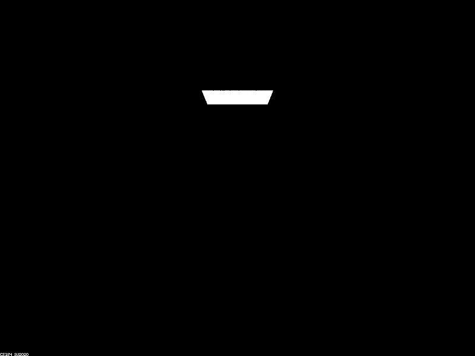
|
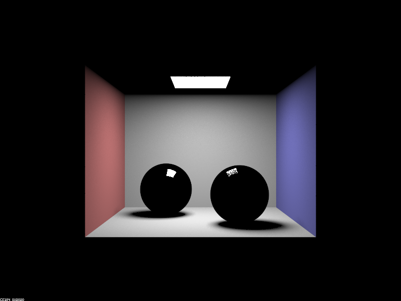
|
|
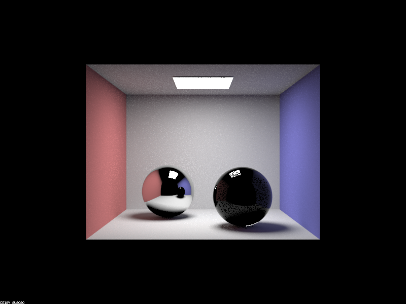
|
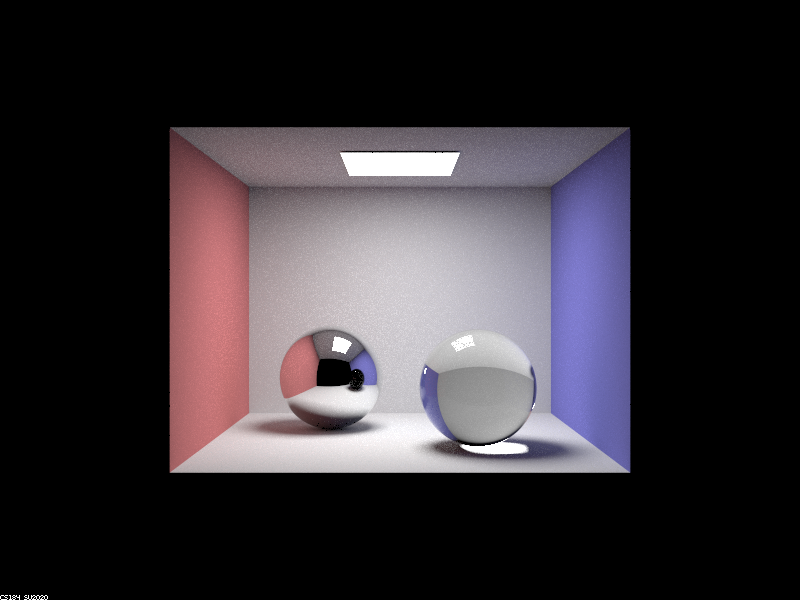
|
|
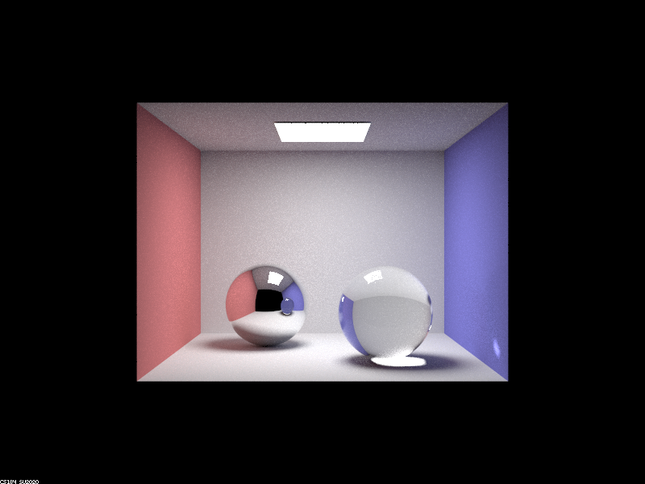
|
|
|
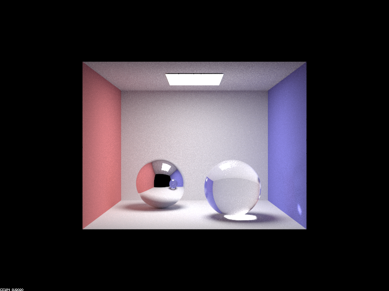
|
Point out the new multibounce effects that appear in each image.
At max ray depth of 0, only the ceiling light source is displayed.
At max ray depth of 1, the room is now lit, with the ceiling and spheres still remaining black. However, the ceiling light is now being shown on the mirror sphere’s surface, as well as partially showing on the glass sphere’s surface.
At max ray depth of 2, the mirror sphere properly renders and its surface shows the reflection of the room with a black ceiling and black glass sphere. The glass sphere also has a very slight reflection of the walls and floor. The actual ceiling is also now lit.
At max ray depth of 3, the glass sphere properly renders and the mirror sphere’s surface displays the reflection of the room with the ceiling no longer being black, but with the glass sphere still showing up as black.
At max ray depth of 4, the glass sphere’s reflection is now properly showing up on the mirror sphere’s surface. There is now also light projecting to the right blue wall.
At max ray depth of 5 and 100, the images look extremely similar to the image produced with a max ray depth of 4, as there are no new drastic multibounce effects or changes to the render result. However, the image outputs are a tiny bit brighter, particularly the glass sphere.
Explain how these bounce numbers relate to the particular effects that appear. Make sure to include all screenshots.
At max ray depth of 0, only the ceiling light is displayed because a max ray depth of 0 corresponds to zero bounce radiance, which means that our rendered image will only visualize light sources. Since the ceiling light is the only light source in the image, that is the only thing visualized.
At max ray depth of 1, we can see the walls and floor of the room, and the reflection of the ceiling light in both balls because ray depth of 1 means we now have zero bounce and one bounce radiance. This means that we are able to visualize both light sources and surfaces that are directly hit by the light source, which includes the walls and the balls. The ceiling remains completely black because it does not receive direct lighting from the ceiling light. The reason that the balls still remain mostly black except for the reflections of the light source is because we can’t yet reflect the walls, since the walls are not a direct light source and one bounce only allows us to detect direct lighting. The reason that the reflection in the left ball is more clear than the one on the right is because the left ball is a mirror ball (fully reflective) while the right ball is a glass ball, and therefore is not fully reflective because it also must refract light.
At max ray depth of 2, we can see the reflections of the walls in the balls. Since we have max depth 2, this means we can visualize direct light sources, surfaces directly hit by the source (direct lighting), and also surfaces that are hit by light from these surfaces. This means that the balls are now able to reflect the walls and floor, and anything else that receives direct lighting from the light source. This is also why the reflection of the ceiling in the balls are still black, even though the ceiling itself is no longer black. In the left ball, we can even see a reflection of the right ball. While both balls are reflecting their environments, the right ball is much less reflective, and is still nearly black. This is, once again, because the right ball is glass and is therefore meant to only reflect some of the light, and refract the rest. At ray depth 2 we cannot visualize refraction so we only see the reflection, which happens at a much lower extent in the glass ball than the mirror ball. The reason we cannot see refraction yet is explained in the next section, on max ray depth 3.
At max ray depth of 3, we can now visualize refraction as well. The reason that refraction is visualized one level deeper than reflection is because while reflection looks at a ray going into the surface and a ray going out, refraction has an intermediate level – it looks at a ray going into the surface, then a ray within the ball, and then a ray going out of the surface. The reflections of the ceiling in the balls are also no longer black. One thing to note is that the reflection of the glass ball in the mirror ball is still black, even though the glass ball is not black anymore. This is because, for the glass ball to properly be visualized, we needed a ray depth of 3. That means that we would need to have a ray depth that was one level deeper if we want to be able to actually obtain the reflection of this visualization in the mirror ball. In general, we can say that if something gets visualized starting at ray depth d, then the reflection of this “something” gets visualized starting at ray depth d+1.
At max ray depth of 4, we are finally able to properly see the full reflection of the glass ball in the mirror ball. The reason for this was described in the previous section about max ray depth 3. We can also see light refracting, exiting the ball, and now hitting the right wall. With ray depth 3, we had a ray from the glass ball to the camera that allowed us to see refraction. Now we can imagine a ray from the glass ball to the right wall, and then another ray from the wall to the camera that allows us to see this new light spot at ray depth 4. We can also see that with increased ray depth, the glass ball in general is brighter due to more bounces, and we can see total internal reflection at the bottom of the ball.
At max ray depth of 5 and 100, the images are very similar to the one for ray depth 4. This shows how max ray depth of 4 is around the point where increasing the ray depth does not do much to benefit the output of the image. The only clear difference is that the image gets a bit brighter, particularly the glass ball, between ray depth 5 and 100 due to the increase in bounces.
Part 4. Depth of Field
For these subparts, we recommend using a microfacet BSDF scene to show off the cool out of focus effects you can get with depth of field!Implementation Summary
In Part 4, we generated rays to interact with a thin-lens camera model instead of working with the previous pinhole camera model. This was done in the generate_ray_for_thin_lens() function. We began by generating the ray in camera space from the image input sensor the exact same way as we did in Project 3-1, which helps us calculate the resulting ray's direction and the point of focus later on. Since the thin lens can receive radiance from any point on it, we uniformly sample the lens disk at the point pLens, where $pLens = (lensRadius * \sqrt{rndR} * cos(rndTheta), lensRadius * \sqrt{rndR} * cos(rndTheta), 0)$. rndR and rndTheta are the uniformly sampled numbers to generate this point on the thin lens. Once we have pLens, we can then calculate the point of focus pFocus by intersecting the plane of focus with our generated ray. This required us to normalize the generated ray and scale it by the focal distance accordingly. We then calculated the resulting ray by setting its origin at pLens and its direction toward pFocus, which we did by doing $direction = pFocus - pLens$. After this, we normalized the direction of this ray, transformed the ray into world space, added the offset of pos to its origin, and set its clipping bounds to successfully implement generating rays for a thin-lens camera model.
In a few sentences, explain the differences between a pinhole camera model and a thin-lens camera model.
A pinhole camera model is one that keeps everything in the camera view in focus. This is achieved through using a small pinhole where all light must travel through in the same direction towards the camera’s plane of focus. A thin-lens camera model uses a lens to refract incoming light, only keeping objects in focus if they exist within a plane that is a specified focal distance/length away from the lens. By using a thin-lens, all the light rays passing and refracting through the lens eventually converge onto a single point to focus onto a certain area in the scene.
Show a "focus stack" where you focus at 4 visibly different depths through a scene. Make sure to include all screenshots.
Here are images that display the scene at six different depths, all with a lens radius of 0.3. We wanted to show more than four since it's really cool to see more progression. As depicted, as the focal distance increases, the focus area of the scene changes from various parts of the dragon to the back wall:
|
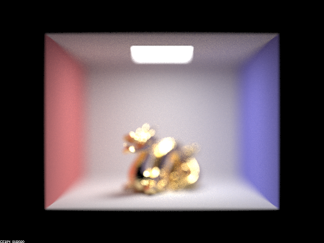
|
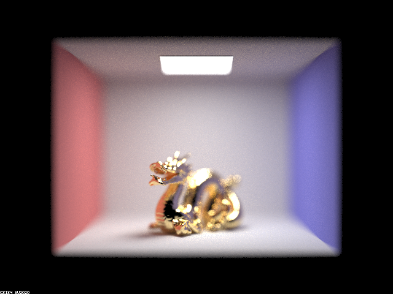
|

|
|
|
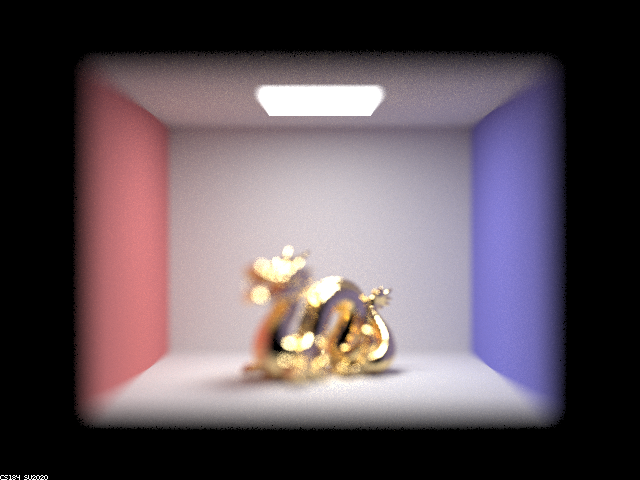
|
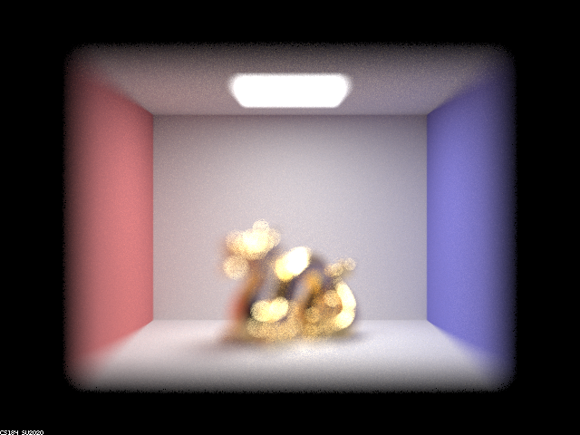
|
As mentioned, as the focal distance increases, the focus of the scene gradually moves from the head of the dragon following its tail, then eventually brings the back wall into focus. In the rendering with a focal distance of 4.5, the jaw of the dragon is in focus. In the rendering with a focal distance of 4.7, the lower body of the dragon right underneath its head is in focus. In 5.0, we see that the later half of the dragon's body/tail is in focus. In 5.3, we see that the focus has now shifted to the bare end of the tail to the back wall. One thing that was cool to compare was the differences in focus of the back wall between focal distances 4.2 and 5.8, where it is extremely blurry in 4.2 but very clear in 5.8.
Show a sequence of 4 pictures with visibly different aperture sizes, all focused at the same point in a scene. Make sure to include all screenshots.
Here are images that display the scene at four different aperture/radius sizes, all with a focus distance of 5.0 to focus on the later half of the dragon's tail. As depicted, the increase in lens size causes blur to become more prominent since the focus area becomes smaller as a result.
|
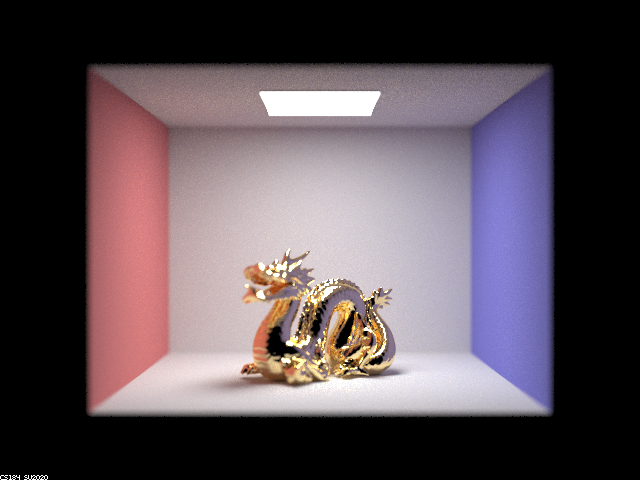
|
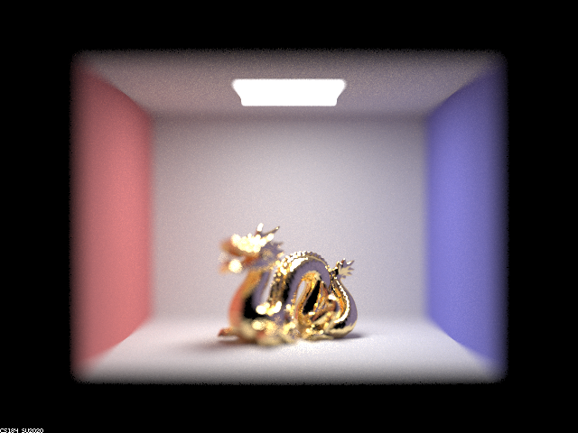
|
|
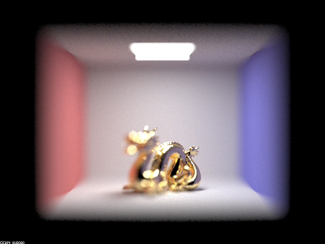
|
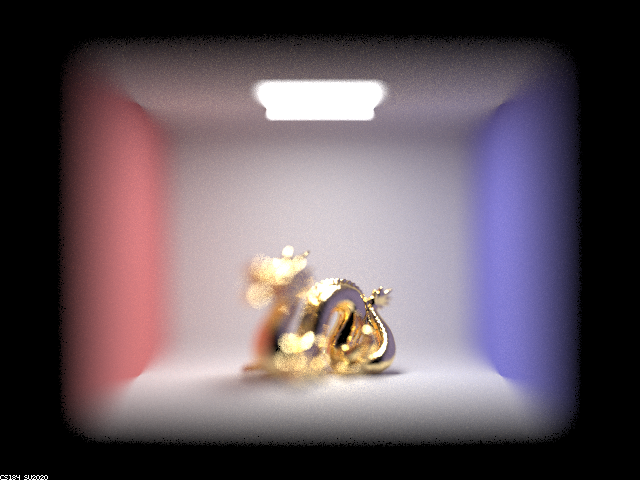
|
With a lens radius of size 0.1, the render is almost identical to an image rendered without using a thin-lens model and using a pinhole model instead. This is because a lens radius size of 0 corresponds to a pinhole model for our code. With a lens size of 0.3, we see that the image becomes blurred for every area that is not our focus area (the later portion of the dragon's body/tail). This effect is increased and becomes more prominent in the renders using sizes 0.5 and 0.7, which follows what was mentioned previously as increasing lens size causes more blurring around the focus area to occur.
Peer Evaluation
For this project we worked together on everything. We both tried out every task of every part, helping the other debug when they got stuck. We also both worked on the write-up, splitting parts as needed in order to finish the project. We were able to learn a lot about light reflecting/refracting on surfaces, simulating an actual camera lens, and the theory/math behind it all.